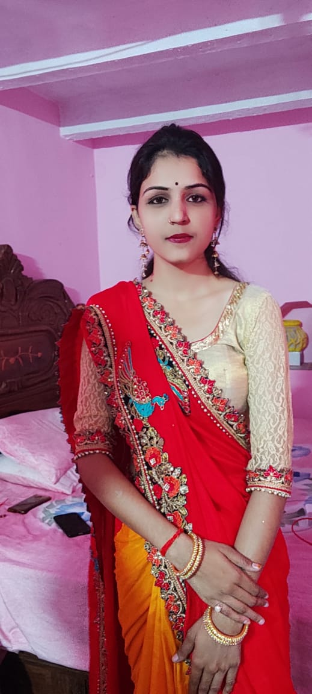

The Couple
"Marriages, like a garden, take time to grow. But the harvest is rich unto those who patiently and tenderly care for the ground."
The Bride and Groom
Khusboo
 I would describe myself as someone who is honest, caring, intelligent, hardworking, and ambitious. I have a great sense of humour. I am an easy going person & don’t get easily disturbed by down’s in my life. I a spiritual person & have a good library of best spiritual books. I also enjoy travelling, watching movies, going out for dinner, and having great intellectual conversations! I have completed my graduation in social studies from Patna University and now preparing for doing B.Ed.
Bhaskar
I was born in Kolkata, I spent most of MY summer holidays at grandparents home in Bhabhua, Bihar and Nana nani's at Patna. Always with an army of friends who used to come for tuitions taught by mother and sisters, everyone sprouted wings when a little devil stepped off the auto rickshaw. Now they all could get away with anything. Mom screaming my name in the morning because of his latest mischief, was an everyday alarm and broadcast to the locality in which we lived in. That was the age where social media hadn't taken over our lives, soon prompted by my name being yelled by my friends on the front door.I was never short of love from nearest and dearest or getting whooped for causing trouble on a daily basis. But At the age of 11 when i was in 6th standard,mom suddenly left because of ill health. After that my both sisters taken care of me like a little baby and grew me up so i have very fond of both my sisters. From 2007, i am living in Lucknow. Pursued my graduation P.G.(M.C.A) from Lko University ,currently working as software developer. I'd describe myself as someone who's reliable, trendy, smart and someone who always has a smile on the face. I am a big Nature & Animal lover. I have lived in different parts of India and appreciate all cultures & customs. Looking forward to exploring more with someone of my age. I have always enjoyed and loved the company of my parents. I belong to a well-mannered middle-class family and strongly believe in Hindu culture, rituals & holds an open-minded personality. I'm a pure vegetarian and never not drank or smoked. I'm Affectionate, kind-hearted, Caring, Happy & belives in Hard Working and creativity. My hobbies are Reading, Dancing, Watch Online Documentaries and Learn New Things.